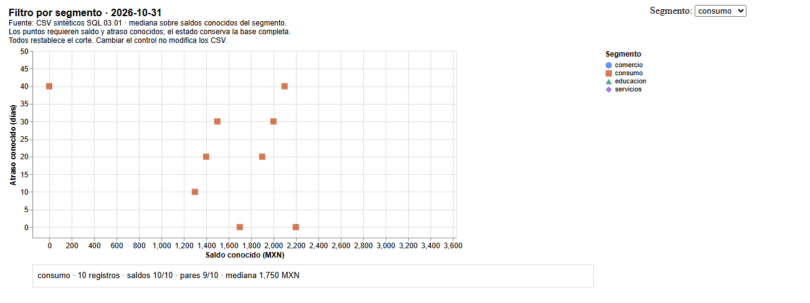
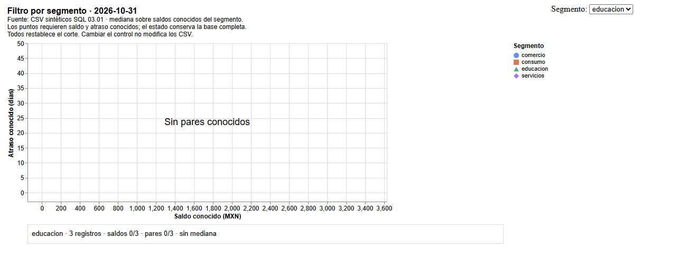
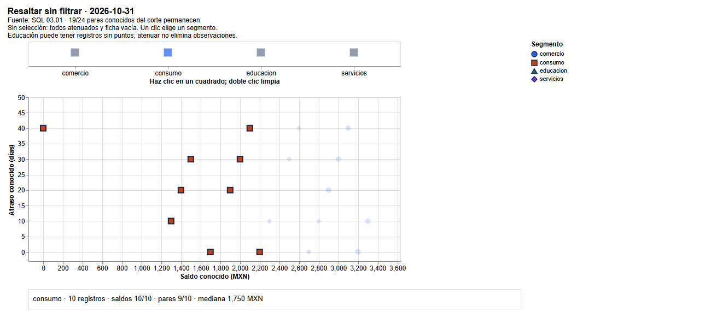
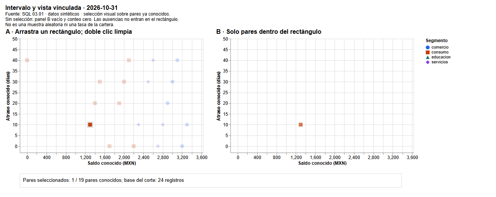

04.08 — Interacción con Altair
MÓDULO 04 / 04.08
Contenido / Visualización en Python
Inicio / Módulo 04 / Lección 04.08
| Tu sesión | Qué prepararás o comprobarás |
|---|---|
| Meta | Explorar estados de una figura distinguiendo filtrar de resaltar |
| Necesitas | Recorrido Altair de 04.07; extensión opcional |
| Evidencia | HTML, tabla y evidencia reproducible de un estado de interacción |
Preparación · Material de apoyo · Ir al lab · Comprobar
Extensión opcional: si no eliges interacción, continúa con 04.09 — Cierre visual del análisis.
Propósito
Explorar un indicador conocido mediante controles y selecciones, dejando claro qué población se muestra después de cada acción. Una interacción puede cambiar el aspecto de una marca o las filas que llegan a una vista: esas decisiones no son equivalentes y deben poder comprobarse.
Antes de empezar
Esta sección es extensión opcional. Completa 04.07 — Visualización declarativa y su lab, especialmente datos, marcas, canales, tipos y exportación HTML. Reutiliza bases de comparación de 04.03 y pares conocidos de 04.04. No necesitas JavaScript, un servidor ni una aplicación Streamlit.
Qué vas a aprender
- Diferenciar un parámetro variable de una selección de puntos o intervalo.
- Vincular un menú a un parámetro y filtrar una vista con una regla explícita.
- Resaltar sin confundir atenuación con exclusión.
- Explicar selección vacía, restablecimiento, población y denominadores.
- Compartir un HTML interactivo y registrar evidencia de un estado concreto.
Material de apoyo
| Recurso | Para qué sirve | Uso |
|---|---|---|
| Script de ejemplo | Construir filtros y selecciones sobre datos conocidos | Si eliges la extensión |
| Fuentes de SQL | Consultar las observaciones y sus bases | Entradas compartidas |
| Filtro de referencia | Contrastar la población tras elegir consumo | Para observar |
| Resaltado de referencia | Distinguir atenuación de exclusión | Para observar |


Las figuras incluidas sirven para observar y contrastar. Abre el script cuando el recorrido lo indique para regenerar o practicar; conserva las fuentes y las entregas anteriores y utiliza los destinos de práctica indicados.
Contexto y datos del recorrido
El script interaction.py reutiliza prepare y read_detail de 04.07. Conserva las fuentes sintéticas de SQL 03.01 y sus reglas de ausencia. No vuelve a limpiar los datos ni escribe SQLite. Las versiones comprobadas son Altair 6.3.0, pandas 2.3.3 y, para la ampliación de exportación, vl-convert-python 1.9.0.post1. Son referencias del curso, no una afirmación de ser las versiones más recientes. No se agregan dependencias respecto a 04.07.
Octubre de 2026 tiene 24 registros, 21 saldos conocidos y 19 pares conocidos. La tabla de control incluye cada segmento, aunque no tenga puntos:
| Opción | Registros | Saldos conocidos | Pares conocidos | Mediana conocida (MXN) |
|---|---|---|---|---|
| Todos | 24 | 21 | 19 | 2300 |
| comercio | 5 | 5 | 5 | 3100 |
| consumo | 10 | 10 | 9 | 1750 |
| educacion | 3 | 0 | 0 | Sin mediana |
| servicios | 6 | 6 | 5 | 2550 |
La mediana usa todos los saldos conocidos de la opción, no solo las filas que tienen también atraso. Por ejemplo, consumo tiene 10 saldos conocidos y nueve pares. Filtrar una dispersión no autoriza a sustituir su base por la de otro indicador. La mediana global 2300 se calcula desde el detalle; no es la mediana ni la suma de las medianas de segmentos.
1. El estado de una figura
Un estado describe una configuración concreta: opción del menú, segmento seleccionado o límites de un rectángulo. Un evento es una acción que puede cambiarlo, como elegir una opción, hacer clic o arrastrar. El visor interpreta la especificación y actualiza la figura en el navegador.
flowchart LR
A[Tabla comprobada] --> B[Especificación con parámetros]
B --> C[HTML abierto en navegador]
D[Menú, clic o arrastre] --> E[Estado del parámetro]
E --> F[Condición o filtro]
C --> F
F --> G[Vista y base explícita]Sin renderizador: se prepara una tabla y una descripción con parámetros. Al abrir el HTML, una acción cambia un parámetro; una condición o filtro utiliza ese estado para actualizar las marcas. Los CSV originales permanecen iguales.
En estos ejemplos el navegador trabaja con datos incorporados. Cambiar el menú no vuelve a ejecutar Python, no consulta SQLite y no guarda un CSV nuevo. Recargar el HTML devuelve el estado inicial; no presupongas que recuerda el último clic. La reejecución de una aplicación pertenece a otros módulos.
| Acción | Efecto en las marcas | Pregunta de comprobación |
|---|---|---|
| Tooltip | Presenta información del punto | ¿De qué fila son sus valores? |
| Condición de opacidad | Resalta o atenúa puntos que permanecen | ¿Cuántos siguen presentes? |
| Filtro por parámetro | Conserva solo filas que cumplen una regla | ¿Qué base queda? |
| Intervalo vinculado | Filtra otra vista con el rectángulo seleccionado | ¿Qué pares están dentro y cuáles fuera? |
Un tooltip ya estaba en 04.07. No equivale a seleccionar ni filtrar. Tampoco crear una selección produce por sí solo un análisis correcto: debes declarar cómo afecta a la vista y contrastar los resultados.
2. Parámetro variable: un menú de segmentos
Una variable de Python como grupo = "consumo" se utiliza cuando ejecutas el código. Un parámetro variable de Altair queda en la especificación: su valor puede cambiar después en el navegador.
Este ejemplo se ejecuta desde la carpeta de la lección, con el entorno elegido:
import altair as alt
from interaction import prepare, read_detail, OPTIONS
tablas = prepare(read_detail(), "2026-10-31")
control = alt.binding_select(options=OPTIONS, name="Segmento: ")
segmento = alt.param(name="segmento_demo", value="Todos", bind=control)
regla = (segmento == "Todos") | (alt.datum.segmento == segmento)
vista = alt.Chart(tablas["pares"]).mark_point(filled=True).encode(
x="saldo_mxn:Q", y="dias_atraso:Q", color="segmento:N",
shape="segmento:N", tooltip=["id_credito:N", "saldo_mxn:Q", "dias_atraso:Q"],
).transform_filter(regla).add_params(segmento)binding_select describe el menú; options contiene Todos y los cuatro segmentos. name del control es su etiqueta visible. alt.param declara el nombre interno y el valor inicial. add_params incorpora el parámetro a la figura; definirlo en una variable sin agregarlo no basta.
alt.datum.segmento describe el campo de una fila que interpretará el visor. No selecciona una Series en pandas. La regla dice «Todos está elegido o el segmento de esta fila coincide». Aquí | combina expresiones declarativas; los paréntesis conservan la agrupación. No reemplazarlo por el or de Python. Los filtros con máscaras de pandas se explicaron en 02.03.
transform_filter elimina filas de esa vista según la regla, sin modificar la tabla de Python ni el archivo original. Las escalas del ejemplo completo se calculan con el corte completo y se conservan al cambiar de opción. Así no confundimos cambio de escala con cambio de saldo o atraso.
El fragmento enseña el mecanismo. La entrega completa añade ficha de estado, fuente y mensaje vacío; úsala para la práctica.

Estado, ausencia y restablecimiento
Al abrir filtro.html, Todos muestra 19 puntos y una ficha con 24 registros, 21 saldos conocidos y mediana 2300 MXN. Elegir consumo muestra nueve puntos, pero la ficha informa 10 registros y mediana 1750 sobre 10 saldos. Todos restablece el corte completo.
Elegir educación muestra Sin pares conocidos: hay tres registros, ningún saldo conocido, ningún par y ninguna mediana. No significa que la fuente no tenga filas. Con --cut 2026-11-30 no hay registros en la fuente: el mensaje es Sin registros y tampoco hay cobertura definida. 0/0 no es 0 %.

La ficha utiliza resumen_segmentos.csv, con una fila preparada por opción. La dispersión utiliza pares.csv. El mismo parámetro gobierna ambas vistas, pero sus bases tienen significado distinto. La ficha permanece visible cuando la dispersión no tiene puntos, evitando que el silencio del visor se interprete como mediana cero.
3. Selección de puntos: resaltar sin eliminar
Una selección de puntos captura valores de campos a partir de una acción. No tiene que representar un solo crédito: aquí fields elige segmento, por lo que seleccionar consumo identifica sus nueve pares conocidos.
eleccion = alt.selection_point(
name="eleccion_demo", fields=["segmento"],
on="click", toggle=False, clear="dblclick", empty=False,
)
opacidad = alt.when(eleccion).then(alt.value(1)).otherwise(alt.value(0.18))
resaltado = alt.Chart(tablas["pares"]).mark_point(filled=True).encode(
x="saldo_mxn:Q", y="dias_atraso:Q", color="segmento:N", shape="segmento:N",
opacity=opacidad,
).add_params(eleccion)on="click" define el evento; toggle=False hace que un clic reemplace la selección anterior, sin acumular segmentos. clear="dblclick" la limpia. empty=False hace que una selección vacía no cumpla el predicado para ninguna fila. En este ejemplo todos los puntos empiezan atenuados.
Una condición decide cómo representar cada fila. alt.when(...).then(...) .otherwise(...) expresa «si cumple la selección, usa opacidad 1; en otro caso, 0.18». alt.value representa una constante visual. El navegador aplica esta condición; no es un if que Python vuelva a ejecutar después de cada clic. Usamos when con la API de referencia; ejemplos antiguos pueden usar condition, selection_single o add_selection y no deben mezclarse sin consultar versiones.
En el fragmento se puede elegir desde un punto. La entrega utiliza un panel con cuatro cuadrados de control y agrega la selección allí. La dispersión y la ficha la reutilizan. Esto permite elegir educación aunque no tenga pares: un control construido solo con puntos conocidos impediría hacerlo.

Después de seleccionar consumo siguen presentes 19 puntos; nueve se resaltan y diez se atenúan. El script también usa borde para los seleccionados y conserva forma por segmento. La ficha filtrada informa solo el segmento elegido. Filtrar la ficha no equivale a filtrar la dispersión.
Sin selección, la ficha está vacía y todos los puntos atenuados; el subtítulo explica ese estado. Un doble clic sobre el control limpia la elección. Si usaras empty=True, una selección vacía actuaría como cumplimiento para todas las filas. Esa opción cambia lo que significa «nada elegido»; siempre debe explicarse, especialmente antes de conectar un filtro.
4. Intervalo y vistas vinculadas — profundización de esta extensión
Una selección de intervalo captura límites al arrastrar un rectángulo. El panel A conserva todos los pares; el B representa solo los que quedan dentro. La selección se define en A y se utiliza para filtrar B.
ventana = alt.selection_interval(
name="ventana_demo", encodings=["x", "y"], empty=False, clear="dblclick",
)
base = alt.Chart(tablas["pares"]).mark_point(filled=True).encode(
x="saldo_mxn:Q", y="dias_atraso:Q", color="segmento:N", shape="segmento:N",
)
origen = base.add_params(ventana)
destino = base.transform_filter(ventana)
vinculadas = alt.hconcat(origen, destino)Sin selección B está vacío por empty=False. Arrastrar alrededor del crédito 001, con (1300 MXN, 10 días), deja un punto en B si el rectángulo no incluye otros. A conserva 19. Doble clic en A limpia el intervalo y B vuelve a cero. Puedes mover el rectángulo; no dibujes la selección sobre la propia vista filtrada, donde perderías los puntos necesarios para escoger otra región.

El contador de la entrega distingue pares seleccionados / 19 pares conocidos y la base del corte de 24 registros. Es un conteo visual, no una tasa de morosidad ni una estimación sobre toda la cartera. Las ausencias no tienen coordenadas y no pueden seleccionarse por rectángulo; siguen documentadas en excluidos_pares.csv. Elegir una región por su apariencia tampoco produce una muestra aleatoria ni demuestra causalidad.
Cómo conservar un contador cero
El script calcula el conteo en el visor porque depende del rectángulo actual. En el contador, cada par pesa 1 y se suma peso después del filtro. Una fila auxiliar de peso 0 se conserva siempre, incluso con selección vacía, para que exista un resultado agregado de cero. Esa fila se usa solo en el contador: no se dibuja, no se guarda como crédito en pares.csv ni participa en medianas. Es un recurso de presentación y no una observación inventada de la cartera. No es necesario reproducir esta parte para explicar selección y filtro.
El orden de transformación importa: filtrar y luego agregar responde sobre la selección. Agregar todo y luego filtrar un resumen podría responder otra pregunta. Revisa agregación de 04.07 antes de cambiar transformaciones. En el menú principal las medianas están preparadas por pandas; el rectángulo no las vuelve a calcular.
5. Preparar y ejecutar
Usa el gestor de 00.05 y la preparación de 04.07. No hay paquetes nuevos. Si el entorno ya es adecuado, compruébalo y ejecuta. No instales en base ni mezcles gestores sobre un mismo entorno.
PowerShell
Desde la raíz, con Conda O venv/pip activado:
python -c "import altair, pandas; print(altair.__version__, pandas.__version__)"
python curriculum/04_visualization_python/08_altair_interaction/interaction.py --output curriculum/04_visualization_python/08_altair_interaction/output/octubre
# Ampliación: con el convertidor de 04.07 ya preparado, otra carpeta nueva.
python curriculum/04_visualization_python/08_altair_interaction/interaction.py --bundle --output curriculum/04_visualization_python/08_altair_interaction/output/octubre_bundleRecorrido alternativo uv, sin los gestores anteriores:
uv sync --locked
uv run --locked python -c "import altair, pandas; print(altair.__version__, pandas.__version__)"
uv run --locked python curriculum/04_visualization_python/08_altair_interaction/interaction.py --output curriculum/04_visualization_python/08_altair_interaction/output/octubre
# Ampliación opcional:
uv sync --locked --group chart-export
uv run --locked --group chart-export python curriculum/04_visualization_python/08_altair_interaction/interaction.py --bundle --output curriculum/04_visualization_python/08_altair_interaction/output/octubre_bundleBash/Zsh
Desde la raíz, con Conda O venv/pip activado:
python -c "import altair, pandas; print(altair.__version__, pandas.__version__)"
python curriculum/04_visualization_python/08_altair_interaction/interaction.py --output curriculum/04_visualization_python/08_altair_interaction/output/octubre
# Ampliación: convertidor ya preparado y carpeta nueva.
python curriculum/04_visualization_python/08_altair_interaction/interaction.py --bundle --output curriculum/04_visualization_python/08_altair_interaction/output/octubre_bundleRecorrido alternativo uv:
uv sync --locked
uv run --locked python -c "import altair, pandas; print(altair.__version__, pandas.__version__)"
uv run --locked python curriculum/04_visualization_python/08_altair_interaction/interaction.py --output curriculum/04_visualization_python/08_altair_interaction/output/octubre
# Ampliación opcional:
uv sync --locked --group chart-export
uv run --locked --group chart-export python curriculum/04_visualization_python/08_altair_interaction/interaction.py --bundle --output curriculum/04_visualization_python/08_altair_interaction/output/octubre_bundleCMD / Anaconda Prompt
Desde la raíz y con el entorno Conda activado:
python -c "import altair, pandas; print(altair.__version__, pandas.__version__)"
python curriculum/04_visualization_python/08_altair_interaction/interaction.py --output curriculum/04_visualization_python/08_altair_interaction/output/octubre
REM Ampliacion: con el convertidor preparado y carpeta nueva.
python curriculum/04_visualization_python/08_altair_interaction/interaction.py --bundle --output curriculum/04_visualization_python/08_altair_interaction/output/octubre_bundle6. Entrega, evidencia y comprobación
Cada ejecución exige una carpeta nueva. Genera filtro/resaltado/intervalo en HTML y JSON, corte.csv, pares.csv, excluidos_pares.csv, resumen_segmentos.csv, lectura.md y versiones.json. --cut cambia el corte completo de las tres vistas. --bundle incorpora bibliotecas al HTML y añade PNG/SVG del estado inicial, con sufijo _inicial. Una carpeta parcial no acredita una entrega.
El HTML básico necesita red para cargar bibliotecas; la entrega incorporada usa estos datos locales y puede abrirse sin conexión. Quien abre el HTML no necesita Python. Una previsualización que bloquee JavaScript puede no dibujar la figura: prueba un navegador compatible y revisa visor, archivo y datos.
PNG/SVG iniciales no incluyen menú ni interacción funcional. Tampoco guardan los clics que alguien haga después en el HTML. Para comunicar un resultado concreto conserva captura y texto con opción elegida, rectángulo o IDs seleccionados, corte, medidas y bases. Guarda también el HTML reconstruible. Los CSV generados contienen las tablas de entrada, no una descarga automática de lo que esté seleccionado en el navegador.
Comprueba antes de interpretar:
- Contrasta conteos, exclusiones y medianas con los CSV originales.
- Prueba Todos, consumo y educación; verifica ejes fijos y ficha coherente.
- Comprueba que resaltar consumo mantiene 19 puntos y solo nueve se destacan.
- Limpia cada selección y explica su estado vacío.
- Selecciona un par por rectángulo y coteja ID/coordenadas con pares.csv.
- Revisa el corte vacío y distingue falta de filas de falta de valores.
- Si eliges –bundle, prueba los controles sin red y revisa la entrega estática.
Errores habituales: crear un parámetro sin agregarlo; usar el nombre de una variable Python como si fuera campo; no explicar selección vacía; confundir puntos atenuados con eliminados; cambiar denominadores al filtrar; construir controles solo con pares conocidos; enviar una captura sin el estado que la produjo. Un JSON válido no prueba que los controles respondan correctamente.
El menú se puede operar con teclado en un navegador compatible; clic y arrastre requieren otra forma de interacción. No se presupone accesibilidad completa por incorporar un control. Las tablas y la explicación textual permiten comprobar resultados sin depender del cursor, color o rectángulo.
Práctica
Solo si eliges esta extensión, realiza el lab 04.08 para reproducir un estado de interacción y comprobar su población.
Evidencia y criterio de salida
| Conserva | Comprueba | Explica |
|---|---|---|
| HTML, tabla y nota de una acción | Estado inicial, selección y restablecimiento | Qué cambia al filtrar y qué permanece al resaltar |
| Evidencia reproducible de un estado | Población, saldos, pares, ausencias y denominador | Por qué seleccionar una dispersión no redefine automáticamente la base de otro indicador |
Si eliges esta extensión, puedes cerrarla cuando distingas filtro y resaltado, compruebes bases y ausencias, expliques el estado inicial/restablecimiento y conserves una evidencia reproducible de una interacción.
Quien aprende realiza y explica la práctica; su compañero revisa. Tu compañero repite la acción registrada y contrasta filas visibles, pares e indicador. Guarda evidencia, ayudas y dudas en una nota personal junto a tu práctica. PROGRESS.md conserva el desarrollo editorial; disponer del material no acredita por sí solo aprendizaje completado.
No hay proyecto ni checkpoint implementado asociado a esta lección.
Referencias
Ejemplos, datos, código y capturas propios de DS Track. Se consultaron fuentes primarias de los equipos Vega-Altair y Vega-Lite; no se copiaron sus datasets ni ejemplos de galería. Las páginas de documentación pueden mostrar una compilación posterior a la referencia ejecutada.
Siguiente paso
Después de la práctica y su comprobación, continúa con 04.09 — Cierre visual del análisis.
Omitir esta extensión no bloquea 04.09 ni Python aplicado.